（1）JavaScript是嵌入HTML中的代码，在浏览器中执行的脚本语言，具有与Java和C语言类似的语法。
（2）一种网页编程技术，用来向HTML页面添加交互行为。
（3）直接嵌入HTML页面中。
（4）由浏览器解释代码并执行代码，不进行预编译。
注：
JS是脚本语言，即没有编译器。JS与Java没有任何关系。JS是基于对象的，Java是面向对象的。
面向对象：是先有一个抽象的对象描述（类）， 然后根据这个描述去构建新的对象（实例化对象）
基于对象： 是先有一个具体的对象，然后根据这个具体的对象，再去创建新的对象（实例化对象）
（1）是脚本语言，可以使用任何文本编辑工具编写。
（2）由浏览器内置的JavaScript引擎执行代码。
解释执行：事先不编译，逐行执行。
基于对象：内置大量现成对象。
（3）使用场景：
客户端数据的计算。
客户端表单合法性验证。
浏览器的事件触发。
网页特殊显示效果制作。
服务器的异步数据提交。
（1）事件定义式： 直接在事件定义时写js。
<!DOCTYPE html>
<html>
<head>
<meta charset="utf-8" />
<title>JSDemo</title>
</head>
<body>
<!-- 注意，单双引号不要写错了 -->
<!-- 事件定义式定义一个按钮，当鼠标点击时，跳出一个对话框-->
<input type="button" value="Sure" onclick="alert('Hello');"/>
</body>
</html>（2）嵌入式：直接写在<script></script>标签中。
<!DOCTYPE html>
<html>
<head>
<meta charset="utf-8" />
<title>JSDemo</title>
<!-- 嵌入式的js写在<script>标签中 -->
<script type="text/javascript">
/*要调用的JS需要定义在函数中，
function 函数名（参数）{函数体}
*/
function show(){
alert('Hi');
}
</script>
</head>
<body>
<!-- 嵌入式需在<script>标签中写函数，然后调用该函数。-->
<input type="button" value="Cancel" onclick="show()"/>
</body>
</html>（3）文件调用式（推荐，有时也称为无干扰脚本编程）：代码位于独立的（.js）文件中，然后在（.html）文件中通过<script>标签来引用（.js）文件。其中<script>标签可以存在于<head>或者<body>标签中。
【举例：】
【Test.html】
<!DOCTYPE html>
<html>
<head>
<title>如何使用JS</title>
<meta charset="utf-8" />
<!-- 引用JS需使用<script>标签,且必须写成双标签，且标签内部不要添加任何内容 -->
<script type="text/javascript" src="../js/Test.js"></script>
</head>
<body >
<!-- 文件调用式,先使用<script>双标签引用js文件，然后再调用函数。-->
<input type="button" value="Submit" onclick="show()" />
</body>
</html>
【Test.js】
/*.js文件等价于<script>标签 ，即写函数即可*/
function show(){
alert("Hello World!!!");
}
（1）语句大小写敏感，使用分号（建议使用）或者换行结束。语句由表达式、关键字、运算符组成。使用Unicode字符集编写。
（2）单行注释（//） 、多行注释（/* */）。
（3）标识符：
不以数字开头，由字母、数字、下划线(_)以及美元（$）组成。JS中存在代表特定含义的保留字，不能将保留字定义为标识符。命名时最好有意义。
（4）变量：
变量声明：统一使用关键字var声明变量，但变量引用的数据是有类型的。
变量初始化：使用“=”赋值，没有初始化的变量则自动取值为undefined。
比如：
var name = "tom";
var age = 18; （5）数据类型（JS基于对象）：
特殊类型： null(空)、undefined(未定义)。
内置对象（基本类型）：Number(数字)，String(字符串)，Boolean(布尔)，Function(函数)，Array(数组)。
外部对象：window(浏览器对象)，document(文档对象)。
自定义对象：Object(自定义对象)。
Number不区分整数与浮点数，所有数字均采用64位浮点格式存储，类似double格式。整数默认是10进制，16进制需加上0x，八进制需加0 。浮点数默认为小数点记录，也可以使用指数记录。
（6）数据类型自动转换
数字加字符串：数字转换为字符串。
数字加布尔值：true转换为1，false转为0。
字符串加布尔值：布尔值转为字符串true或false。
布尔值加布尔值：布尔值转换为数值1或0。
（7）数据类型转换函数
1、toString()：将所有数据类型转换为String类型。
比如：
a.toString();
2、parseInt()：强制转为整数，如果不能转换，则返回NaN（not a number）。
比如：
paserInt("5.5")返回5，
parseInt(6.12)返回6 。
3、parseFloat()：强制转为浮点数，如果不能转换，则返回NaN。
比如：
parseFloat("6.12")返回6.12 。
4、typeof()：查询当前类型，返回string/number/boolean/object/function/undefined。
比如：
type("test" + 3) 返回string.
5、isNaN()：判断被检测的表达式经过转换后是否是一个数。不是数则返回true，否则返回false。
比如：
isNaN("56")返回false。
isNaN(parseInt("56"))返回false。
isNaN(parseInt("aaa"))返回true。
6、eval()：函数用于计算表达式字符串，或者用于执行字符串中的JS代码，如果参数中没有合法的表达式和语句，那么会抛出异常。
【举例：（计算平方值）】
<!DOCTYPE html>
<html>
<head>
<title>计算平方</title>
<meta charset="utf-8" />
<script>
//计算输入数字的平方
function cal(){
//获取文本框，并从中取值
var num = document.getElementById("num");
//获取span，并向其取值。
var result = document.getElementById("result");
//获取文本框中的值
var n = num.value;
//如果文本框没有任何输入内容，则从文本框中获取的是""，不是null
if(n=="" || isNaN(n)){
//如果n为空，或者n不为数字，则不计算平方并给出提示
//innerHTML是元素的内容
result.innerHTML = "请输入数字";
}else{
//输入的是数字，计算平方
result.innerHTML = n*n;
}
}
</script>
</head>
<body>
<input type="text" id="num"/>
<input type="button" value="平方" onclick="cal()"/>
=
<span id="result"></span>
</body>
</html>
【举例：】
eval("1 + 2");
eval("ad");
eval("3*3*3");
eval("a = 1, b = 3, a + b");
eval("a = 1; b = 3; a + b;");
eval(1 + 3);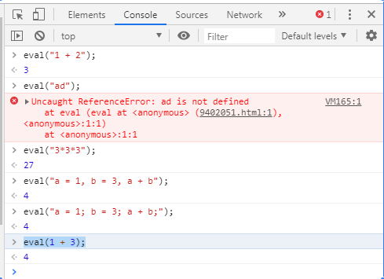
（8）运算符
1、算术运算符：
+，-，*，/，%，++，--。
注意：
Java中5/2=2.
JS中5/2=2.5 。
2、关系运算符：
>, < , >=, <=, ==, != ， ===(全等，类型相同、数值相同)， !==(不全等)。
关系表达式的值为true或false。
3、逻辑运算：
!（逻辑非）, &&（逻辑与）, ||（逻辑或）。
注：
1 || 2 的值为 1
2 || 1 的值为 2
2 || null 的值为 2
null || 2 的值为 2
1 && 2 的值为 2
2 && 1 的值为 1
1 && null 的值为 null
null && 1 的值为 null
4、条件运算（三目/元运算）：
表达式？结果1：结果2;
先计算表达式的值，若为true，那么结果为结果1的值，若为false，那么为结果2的值。
【举例：（猜数字）】
<!DOCTYPE html>
<html>
<head>
<title>猜数字</title>
<meta charset="utf-8" />
<script>
/*
生成一个随机数(1~100)，由于存在函数外部，故为全局变量，
此代码在页面加载时执行。
*/
var init_num = parseInt(Math.random()*100)+1;
//实现猜数字的函数
function guess(){
//获取文本框
var input = document.getElementById("num");
//获取段落
var p = document.getElementById("result");
//获取文本框的值
var n = input.value;
if(n=="" || isNaN(n)){
p.innerHTML="请输入1~100间的整数";
}else{
//进行比较
if(n < init_num){
p.innerHTML="小了";
}else if(n > init_num){
p.innerHTML="大了";
} else{
p.innerHTML="对了";
}
}
}
</script>
</head>
<body>
<input type="text" id="num" />
<input type="button" value="猜吧" onclick="guess()" />
<p id="result" ></p>
</body>
</html>（9）流程控制
程序逻辑结构：顺序（默认）、循环、分支。
分支：if-else语句，switch-case语句。
循环：for语句，while语句，do-while语句。
java中的条件表达式必须返回布尔值（true或false），而JS的表达式可以返回任何类型的值（比如NaN，null，0，”“， undefined等均表示false）。即在JS中任意数据均能作为表达式，如果是非空的数据，则表示true，若为空（NaN，null，0，”“， undefined）的数据，则表示false。
"a" ? 1 : 2 的值为1
0 ? 1 : 2 的值为2
null ? 1 : 2 的值为2
【举例：（计算阶乘）】
<!DOCTYPE html>
<html>
<head>
<title>计算阶乘</title>
<meta charset="utf-8" />
<script>
function cal(){
//获取文本框
var input = document.getElementById("num");
//获取span
var span = document.getElementById("result");
//获取文本框的值,其返回的是字符串，若计算数字，内部会自动转型
var n = input.value;
if(n=="" || isNaN(n) || n<1 || n>100){
//输入的数字不能为空，非数字，小于1，大于100
span.innerHTML = "请输入1~100间的整数";
}else{
//计算阶乘
var sum = 1;
for(var i=1; i <= n; i++){
sum*=i;
}
span.innerHTML = sum;
}
}
</script>
</head>
<body>
<input type="text" id="num"/>
<!-- HTML5规范，可以将按钮写成<button> -->
<button onclick="cal()">阶乘</button>
=
<span id="result"></span>
</body>
</html>
（1）对象分类：
内置对象。比如String，Number等。
外部对象。window对象，document对象。
自定义对象。
（2）如何使用对象？
【对象包含属性和方法。】
访问对象属性：
格式：
对象.属性;
【访问对象方法：】
格式：
对象.方法名();（3）常用内置对象
1、String对象。
2、Number对象。
3、Boolean对象。
4、Array对象。
5、Math对象。
6、Date对象。
7、RegExp对象（正则表达式）。
8、Function对象。
【String对象：】
【创建格式:】
var str1 = "hello world";
var str2 = new String("hello world");
【常用方法：】
str1.toLowerCase();//将字符串全改为小写
str1.toUpperCase();//将字符串全改为大写
str1.charAt(index);//返回指定位置的字符，从0开始计数
str1.charCodeAt(index); //返回指定位置的Unicode编码，index指位置。
str1.indexOf(findstr, [index]);//返回字符串所在的位置索引，如不存在，返回-1。findstr为查找的字符串，index为开始查找的位置（可以省略）
str1.lastIndexOf(findstr, [index]);//从尾部（index表示指定开始位置）开始向前查找。
str1.substring(start, [end]);//获取字符串（包含头不包含尾），start为开始位置，end为结束位置（可省略）。
str1.replace(findstr, tostr);//返回替换后的字符串（只换一个），替换子字符串，findstr为查找的字符串，tostr为替换的字符串。
str1.split(bystr, [howmany]);//返回分割后的字符串数组，bystr为分割的字符串，howmany指定返回数组的最大长度（可以省略）。
【举例：】
var str1 = "hello world";
str1.toLowerCase();
str1.toUpperCase();
str1.charAt(4);
str1.charCodeAt(0);
str1.indexOf("l", 2);
str1.lastIndexOf("l", 2);
str1.substring(3, 6);
str1.replace("ll", "hihi");
str1.split(" ", 1);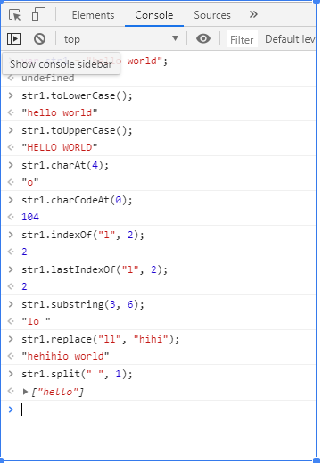
【Array对象：】
数组是一种可以存储一组信息的变量。
【创建格式：】
var a1 = new Array();
var a2 = new Array(7);
var a3 = new Array(111, "a" , true);
var a4 = [100, 200, 300];
【添加数据：】
向数组中添加数据：
可以直接使用 a1[4] = 5; 指定位置赋值。
可以使用a1.push(5);进行赋值。
可以使用a1.pop()取元素。
【常用方法：】
a1.reverse(); //将数组倒转。
a1.toString()；//输出数组。
a1.sort();//数组排序（由小到大排序），可能会排序错误。
a1.sort(compare);//自定义一个compare方法。
JS中预置的比较方法默认返回2个数相减的值，然后基于此值做出排序。比较方法可以进行置换，即修改比较方法，从而对排序产生影响。
【举例：】
var a = [8, 5, 9, 4, 40];
a.sort();
function compare(i, j) {return j - i;}
a.sort(compare);
a.reverse();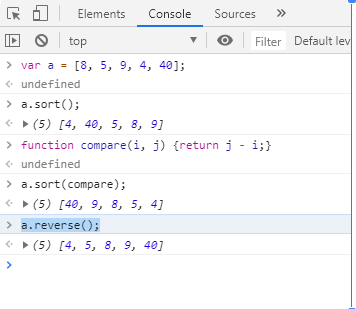
【Math对象：】
Math对象用于执行数学任务，无需创建，直接使用Math调用其属性与方法即可。
比如：Math.PI, Math.round(3.56)（四舍五入函数）， Math.E等。
【常用方法：】
三角函数：Math.sin(x), Math.cos(x), Math.tan(x)等。
计算函数：Math.sqrt(x), Math.log(x), Math.exp(x)等。
数值比较函数：Math.abs(x), Math.max(x,y...), Math.random(), Math.round(x)等。
【举例：】
Math.PI
Math.round(3.56)
Math.E
Math.sqrt(6)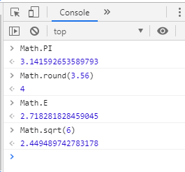
【Date对象：】
Date对象用于处理日期和时间，封装了系统时间毫秒数。
创建Date对象：
var date = new Date();//当前系统时间
var date = new Date("2019/10/20");//自定义时间
【常用方法：】
getTime();//读时间毫秒数
setTime();//写时间毫秒数
读时间分量：getDate(), getDay(), getFullYear()等。
写时间分量：setDate(), setDay(), setFullYear()等。
转为字符串：toString(), toLocaleTimeString(), toLocaleDateString();
【举例：】
var date1 = new Date();
date1.toString();
var date2 = new Date("2019/10/20");
date2.toString();
date1.getTime();
date1.toLocaleTimeString();
date1.toLocaleDateString();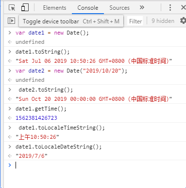
【Function对象:】
JS中的函数即为Function对象。
函数名就是指向Function对象的引用，使用函数名可以访问函数的对象。
【创建格式1：】
function 函数名([参数]){
函数体;
return 返回值; //可选操作，若不写，默认为undefined
}
【创建格式2：】
var functionName = function([参数]){
函数体;
return 返回值; //可选操作
}
【函数的返回值：】
默认值：undefined；
可以使用return返回具体的值。
【函数的参数：】
1、JS的函数没有重载。
2、调用时只要函数名一样，那么无论传入多少个参数，那么均为同一个函数。
3、没有接受到实参的参数值均为undefined。
4、所有的参数传递给arguments对象（数组对象）。
【举例：】
举例：（使用arguments实现类似方法的重载）
//求和，计算传入的数据和
function add(){
var sum = 0;
for (var i=0; i<arguments.length; i++){
sum+=arguments[i];
}
return sum;
}
add(1,2,3);
add(1,2,3,4,5,6);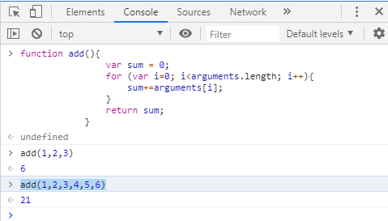
事件是用户在访问页面时执行的操作。当浏览器探测到一个事件时，比如用鼠标单击或按键，它可以触发与这个事件相关联的 JavaScript 对象，这些对象称为事件处理程序（ event handler）。
【分类：】
【鼠标事件：】
onclick(); // 鼠标点击时触发。相当于一次onmousedown与onmouseup。
ondblclick();// 鼠标双击事件。
onmousedown();// 鼠标落下事件。
onmouseup();// 鼠标弹起事件。
onmouseover();// 鼠标悬浮事件。
onmouseout();// 鼠标离开事件。
【键盘事件：】
onkeydown();// 键盘落下事件。
onkeyup();// 键盘弹起事件。
【状态事件：】
onload();// 是页面加载事件,当用户进入页面而且所有页面元素都完成加载时，就会触发这个事件。
onunload();// 当用户离开网页时，就会触发 onunload 事件处理程序（慎用）。
onchange();// 是值改变事件，当值发生改变时触发。多用于下拉选择框（<select> <option>）的值改变事件处理。
onfocus();// 获取光标事件/光标移入事件。（比如点击一个文本框，那么会有一个光标在闪）
onblur();// 鼠标的光标切换时触发。（比如光标从一个文本框移入另一个文本框）
onerror();// 当页面上发生 JavaScript 错误时，可能会触发 onerror 事件处理程序。
onsubmit();// 是表单提交事件，在点击提交按钮时触发。提交按钮触发时，先调用onsubmit方法，若该方法返回true，则提交表单，返回false则不提交。
//常用于拦截提交的目的。 如果没有此事件，那么不管输入的数据是否正确，其都能正确跳转页面。
【以onload为例：】
【格式：】
<body onload="start();"></body>
<!--
图片轮播
要求：
1、在页面上增加一组图片。
2、默认显示为第一章。
3、设置每N秒切换下一张图片并显示。
-->
<!DOCTYPE html>
<html>
<head>
<title>图片轮播</title>
<meta charset="utf-8" />
<style type="text/css">
ul{
//去掉图片前的点
list-style-type: none;
border: 1px solid #ccc;
width: 480px;
height: 360px;
margin: 0;
padding: 0;
}
li{
width: 480px;
height: 360px;
margin: 0;
padding: 0;
}
.show{
display: block;
}
.hide{
display: none;
}
</style>
<script type="text/javascript">
var index = 0;//循环次数
/*每个一秒执行一次，先将所有图片全部隐藏，然后在显示一张图片*/
function start(){
setInterval(function(){
var ul=document.getElementById("photos");
//取ul标签下所有li子元素
var lis=ul.getElementsByTagName("li");
//将所有li隐藏
for(var i=0;i<lis.length;i++){
lis[i].className="hide";
}
//显示下一个li,将其显示
index++;
lis[index%lis.length].className="show";
}, 1000);
}
</script>
</head>
<!-- onload是页面加载事件，表示在页面加载后调用start函数 -->
<body onload="start();">
<ul id="photos">
<li class="show"><img src="../images/f1.jpg" /></li>
<li class="hide"><img src="../images/f2.jpg" /></li>
<li class="hide"><img src="../images/f3.jpg" /></li>
<li class="hide"><img src="../images/f4.jpg" /></li>
</ul>
</body>
</html>
（1）BOM（Browser Object Model）
浏览器对象模型，用来访问和操作浏览器窗口，使JS有能力与浏览器进行交互。通过使用BOM，可移动窗口，更改状态栏文本、执行其他不与页面内容发生直接联系的操作。没有相关标准，但被广泛支持。根为window。
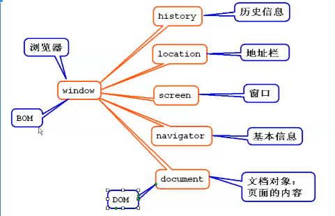
（2）DOM（Document Object Model）
文档对象模型，用来操作文档。定义了访问与操作HTML文档的标准方法，应用程序通过对DOM树的操作，实现对HTML文档数据的操作。根为Document。
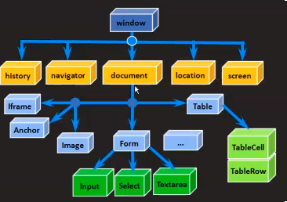
（3）window对象
window表示浏览器窗口，所有的JS全局对象、函数以及变量均自动成为window对象的成员。能被window对象所调用。
【常用属性（子对象）：】
document：窗口中显示的HTML文档对象（DOM）。
history：浏览过窗口的历史记录对象。
location：窗口文件地址对象。
screen：当前屏幕对象。
navigator：浏览器的相关信息。
【常用方法：】
alert(str); //提示对话框，显示str字符串的内容。
confirm(str);//确认对话框，显示str字符串的内容，按“确定”按钮返回true，否则返回false。
//周期性定时器：以一定的时间间隔执行代码，循环往复。
//常用于周期时钟，计时器等。
setInterval(exp, time); 周期性触发代码exp（执行语句），time为时间周期，单位为毫秒。
clearInterval(tID); 停止启动的定时器，tID为启动的定时器对象。
//一次性定时器：在一个设定的时间间隔后执行代码，而不是在函数被调用后立即执行。原理同周期性计时器，但只执行一次。
//常用于提示，比如弹出一个信息框，然后过几秒就会隐藏掉。
setTimeout(exp, time)； //一次性触发代码exp。返回已经启动的定时器。
clearTimeout(tID);//停止启动的定时器。
【举例：（动态时钟，使用周期性定时器）】
<!DOCTYPE html>
<html>
<head>
<title>动态时钟</title>
<meta charset="utf-8" />
<script type="text/javascript">
var id;//启用的定时器id
function start(){
//使用周期性定时器，每个1000ms执行一次function
id = setInterval(function() {
var now = new Date();
var time = now.toLocaleTimeString();
var span = document.getElementById("clock");
span.innerHTML = time;
}, 1000);
}
function stop(){
//根据定时器id，停止定时器
clearInterval(id);
}
</script>
</head>
<body>
<div>
当前时间：
<span id="clock"></span>
</div>
<div>
<input type="button" value="启动" onclick="start()"/>
<input type="button" value="停止" onclick="stop()" />
</div>
</body>
</html>
【举例：（消息提示并自动消失，使用一次性定时器）】
<!DOCTYPE html>
<html>
<head>
<title>动态提示信息并自动消失</title>
<meta charset="utf-8" />
<style type="text/css">
.hide{
display:none;
}
.show{
display:block;
}
</style>
<script type="text/javascript">
function del(){
//假设已删除成功，显示信息，并过2秒将其隐藏
var p = document.getElementById("msg");
p.className = ".show";
var id = setTimeout(function() {
p.className = "hide";
clearTimeout(id);
}, 2000);
}
</script>
</head>
<body>
<!-- 当点击删除按钮成功时，弹出一个信息框，并过了几秒后自动消失 -->
<p>
<button onclick="del();">删除</button>
</p>
<p class="hide" id="msg">操作成功！</p>
</body>
</html>
（4）window常用子对象
【screen对象：】
包含有关客户端显示屏幕的信息。常用于获取屏幕的分辨率和色彩。
【常用属性：】
width/height/availWidth/availHeight（宽、高、可用宽、可用高）。
【history对象：】
包含用户（浏览器窗口中）访问过的URL。
【常用属性：】
length；浏览器历史列表中URL数量。
【常用方法：】
history.back(), (相当于单击一次后退按钮)
history.forward(),（相当于单击一次前进按钮）
history.go(num),（单击num次按钮，num>0 则表示单击前进按钮， num<0 则表示单击后退按钮 ）
【location对象：】
包含有关当前URL的信息，常用于获取和改变当前浏览的网址。
【常用属性：】
href；当前窗口正在浏览的网页地址。
location.href="http://www.baidu.com";相当于跳转到百度页面。
【方法：】
reload(); //重新载入当前网址，相当于按下刷新按钮。
【navigator对象：】
包含有关浏览器的信息。常用于获取客户端浏览器和操作系统信息。
【常用属性：】
navigator.userAgent;
【举例：（以screen对象为例）】
var screen = window.screen;
screen.width;
screen.height;
screen.availWidth;
screen.availHeight;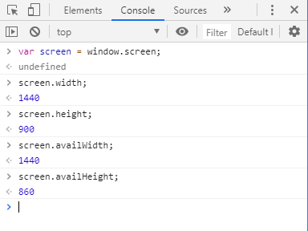
（5）window子对象--document
当网页被加载时，浏览器会扫描页面的内容，并创建页面的文档对象模型（一种树形结构），JavaScript 将文档树中的每一项都当做对象，并进行操作（增删改查）。故JS能改变页面中的所有HTML元素、属性、CSS样式以及对页面所有事件做出反应。
树中的每个对象也称为树的节点（ node）。如果节点包含 HTML 标签，那么它就称为元素节点（ element node），否则，就称为文本节点（ text node）。再细分的话，又包括文档节点，注释节点，属性节点（如下图：从某网站上copy下来的）。
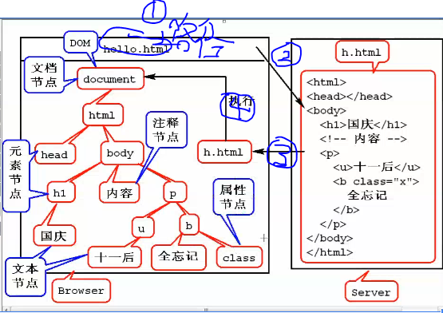
【查找节点】
1、通过id查询。document.getElementById(String idName);若id错误，则返回null。
2、通过标签名称查询。document.getElementsByTagName(String name);返回一个长为length的数组，根据指定标签名返回所有元素。若标签名错误，返回一个长为0的数组。
3、通过节点关系（层次）查询。
node.parentNode遵循文档的上下层次结构，查找单个父节点。
node.childNodes遵循文档的上下层次结构，查找多个子节点（不常用，其将空格视为孩子）。
4、通过name属性查询。document.getElementByName(String name)；根据标签的name属性来查询。常用于单选框、复选框。
【读取、修改节点信息：】
1、获取节点名称。
格式：
节点.nodeName
其中：
元素节点和属性节点的节点名称为标签或属性名，
文本节点的名称为#text，
文档节点的名称为#document。
举例：
document.nodeName; //结果为"#document"
2、获取节点类型。
格式：
节点.nodeType：
其中：
根据返回数值不同来判断节点类型。
返回1为元素节点，
返回2为属性节点，
返回3为文本节点，
返回8为注释节点，
返回9为文档节点。
举例：
document.nodeType; //结果为9
3、设置元素节点的内容，
通过innerText设置或获取位于对象起始和结束标签内的文本（纯文本）。
通过innerHTML设置或获取位于对象起始和结束标签内的HTML（带标签的文本）。
举例：
document.getElementsByTagName("p")[1].innerHTML;
4、获取节点属性，
getAttribute(); //方法根据属性名称获取属性的值。
setAttrinbute(); //方法根据属性名称设置属性的值。
removeAttribute(); //方法根据属性名称删除属性的值。
举例：
document.getElementsByTagName("p")[1].getAttribute("id");
5、元素节点的样式,
style属性：
style.color; //设置节点标签颜色
node.style.fontSize; //设置节点标签的字体大小
举例：
document.getElementsByTagName("p")[1].style.color = "red";
document.getElementsByTagName("p")[1].style.fontSize = "80px";
className属性；（相当于改class属性值）
node.className;
举例：
document.getElementsByTagName("p")[1].className = "show";
【增加节点：】
增加节点步骤：
1、创建节点（此时页面中无显示）。
var newNode = document.createElement(elementName); //返回新创建的节点。
举例：
var newNode = document.createElement("input"); //创建一个input标签对象
newNode.type = "text"; //设置为文本框
newNode.value = "sure"; //设置文本框初始值为 sure
newNode.style.color = "red"; //设置文本框字体的颜色
2、添加节点（将新节点作为某个节点的子节点）。
parentNode.appendChild(newNode); //将新节点作为父节点的最后一个节点追加。
parentNode.insertBefore(newNode, refNode); //新节点位于参考节点（refNode）前。
举例：
document.getElementsByTagName("p")[0].appendChild(newNode);
【删除节点：】
node.removeChild(childNode); //删除某节点（node）的子节点（childNode），若子节点B中还有子节点C，那么会将整个子节点B删除。
一般写成：childNode.parentNode.removeChild(childNode);
举例：
newNode.parentNode.removeChild(newNode);【举例：（联动菜单实现）】
<!--
举例：（联动菜单）
要求：
1、创建省、市下拉选项框。
2、当改变省份时，重置市。
-->
<!DOCTYPE html>
<html>
<head>
<title>联动菜单</title>
<meta charset="utf-8" />
<script type="text/javascript">
//1、提前预置每个省对应的市
var cities = [
["请选择"],
["青岛", "济南", "烟台"],
["杭州", "宁波", "温州"],
["南京", "无锡", "苏州"]
];
function change() {
//2、获取当前选中的省
var province = document.getElementById("province");
var pindex = province.value;
//3、删除所有的市
//var city = document.getElementById("city");
//var options = city.getElementsByTagName("option");
//for(var i=0;i<options.length;i++){
//options[i].parentNode.removeChild(options[i]);
//}等价于
city.innerHTML = "";
//4、重新添加这个省下的市
var pcities = cities[pindex];
for (var i = 0; i < pcities.length; i++) {
//创建option节点
var option = document.createElement("option");
//设置新节点属性
option.setAttribute("value", i);
option.innerHTML = pcities[i];
//将新节点追加到城市下拉选项框中
city.appendChild(option);
}
}
</script>
</head>
<body>
<!-- option的内容时下拉选项显示的值。
option的value是select节点的返回值。
onchange是值改变事件，当值发生改变时触发。 -->
省：
<select id="province" onchange="change();">
<option value="0">请选择</option>
<option value="1">山东省</option>
<option value="2">浙江省</option>
<option value="3">江苏省</option>
</select> 市：
<select id="city">
<option>请选择</option>
</select>
</body>
</html>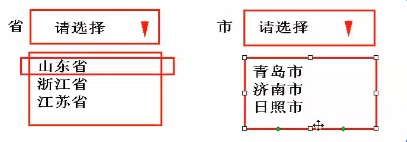
（1）自定义对象是一种特殊的数据类型，由属性和方法封装而成。
属性指与对象有关的值。
格式：
对象名.属性名。
方法指对象可以执行的行为或可以完成的功能。
格式：
对象名.方法名()。
（2）创建自定义的对象的方法：
【第一种：直接创建对象：（此种方法不推荐，可复用性差，代码维护不易）】
【格式：】
<script type="text/javascript">
function f1(){
var teacher = new Object();
//添加属性
teacher.name = "苍#null";
teacher.age = 40;
//添加方法
teacher.work = function(){
alert("Hi");
};
alert(teacher.name+": "+teacher.age);
teacher.work();
}
</script>
【第二种：（利用构造器创建）】
【格式：】
<script type="text/javascript">
function f2(){
//创建对象
var s = new Student("jarry", 30);
//使用对象
alert(s.name+": "+s.age);
s.work();
}
//预置一个带有格式要求的对象
function Student(name, age){
this.name = name;
this.age = age;
this.work = function(){
alert("Hello");
};
}
</script>
【第三种：（使用JSON创建对象）】
【格式：】
<script type="text/javascript">
function f3(){
var programmer = {
"name" : "tom",
"age" : 25,
"work" : function(){alert("Hehe");}
};
alert(programmer.name + ": " + programmer.age);
programmer.work();
}
</script>
【还有原型模式创建等...，未完待续...】
【举例：】
<!DOCTYPE html>
<html>
<head>
<title>创建自定义对象</title>
<meta charset="utf-8" />
<script type="text/javascript">
//使用第一种方式创建对象
function f1(){
var teacher = new Object();
teacher.name = "苍#null";
teacher.age = 40;
teacher.work = function(){
alert("Hi");
};
alert(teacher.name+": "+teacher.age);
teacher.work();
}
//第二种方式
function f2(){
//创建对象
var s = new Student("jarry", 30);
//使用对象
alert(s.name+": "+s.age);
s.work();
}
//预置一个带有格式要求的对象
function Student(name, age){
this.name = name;
this.age = age;
this.work = function(){
alert("Hello");
};
}
//使用第三种
function f3(){
var programmer = {
"name" : "tom",
"age" : 25,
"work" : function(){alert("Hehe");}
};
alert(programmer.name + ": " + programmer.age);
programmer.work();
}
</script>
</head>
<body>
<!-- 第一种，直接new一个对象 -->
<button onclick="f1();">按钮1</button>
<!-- 第二种，使用自定义构造函数,然后new一个构造函数 -->
<button onclick="f2();">按钮2</button>
<!-- 第三种，使用JSON来创建对象,常用于服务端相关 -->
<button onclick="f3();">按钮3</button>
</body>
</html>